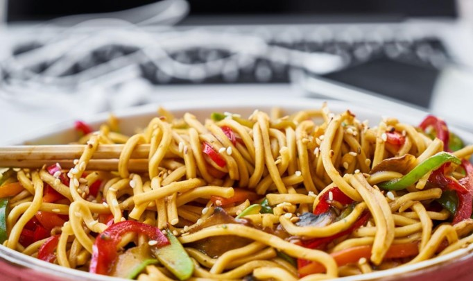
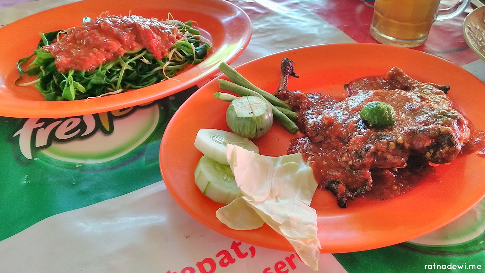

Daftar Menu

MIE GACORR KANG
Mie pedas adalah salah satu jenis hidangan yang sangat populer beberapa waktu ini. Mie dengan cita rasa pedas dan khas ini hadir dalam berbagai level pedas, mulai dari lv- 0 sampai lv- 10
KLIKK
JEPUNG MAS
Makanan Jepang adalah salah satu kuliner yang cukup banyak digemari oleh masyarakat di Tanah Air. Sebab, makanan Jepang memiliki cita rasa yang lezat dan cocok dengan lidah orang.
KLIKK

TRADISIONAL AE
lalapan adalah daun-daun muda, mentimun, petai mentah, dan sebagainya yang dimakan bersama-sama dengan sambal dan nasi; ulam hidangan tradisional disajikan sebagai pelengkap makanan utama
KLIKK